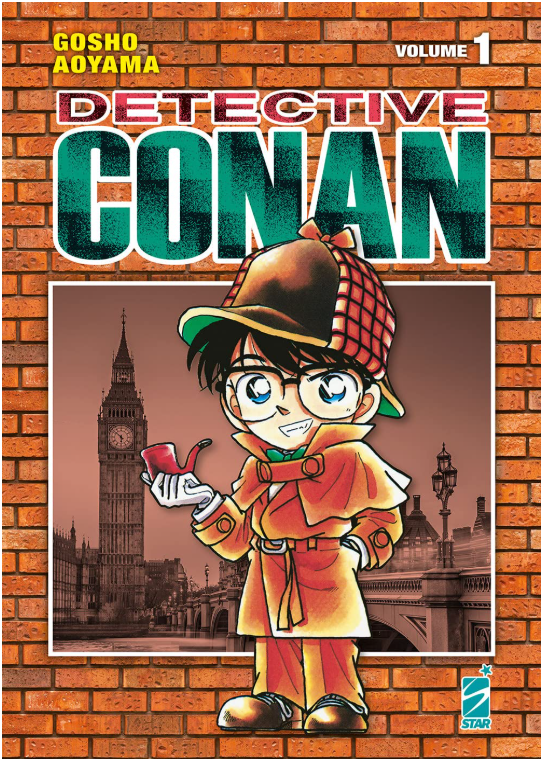

Thám tử lừng danh Conan – bộ manga nổi tiếng của Gosho Aoyama kể về cậu thám tử học sinh trung học Kudo Shinichi bị biến thành trẻ nhỏ sau khi uống phải loại thuốc bí ẩn và từ đó sống dưới cái tên Conan.
Với trí tuệ sắc bén, Conan cùng những người bạn liên tục phá giải các vụ án hóc búa từ những vụ giết người phức tạp đến những âm mưu tội phạm nguy hiểm. Bộ truyện mang đến sự hồi hộp, bất ngờ và kịch tính.
Đây là tác phẩm trinh thám manga kinh điển vừa giải trí vừa rèn luyện tư duy logic được yêu thích rộng rãi trên toàn thế giới. Conan xứng đáng là bộ truyện gắn bó với tuổi thơ và niềm đam mê khám phá của nhiều thế hệ.